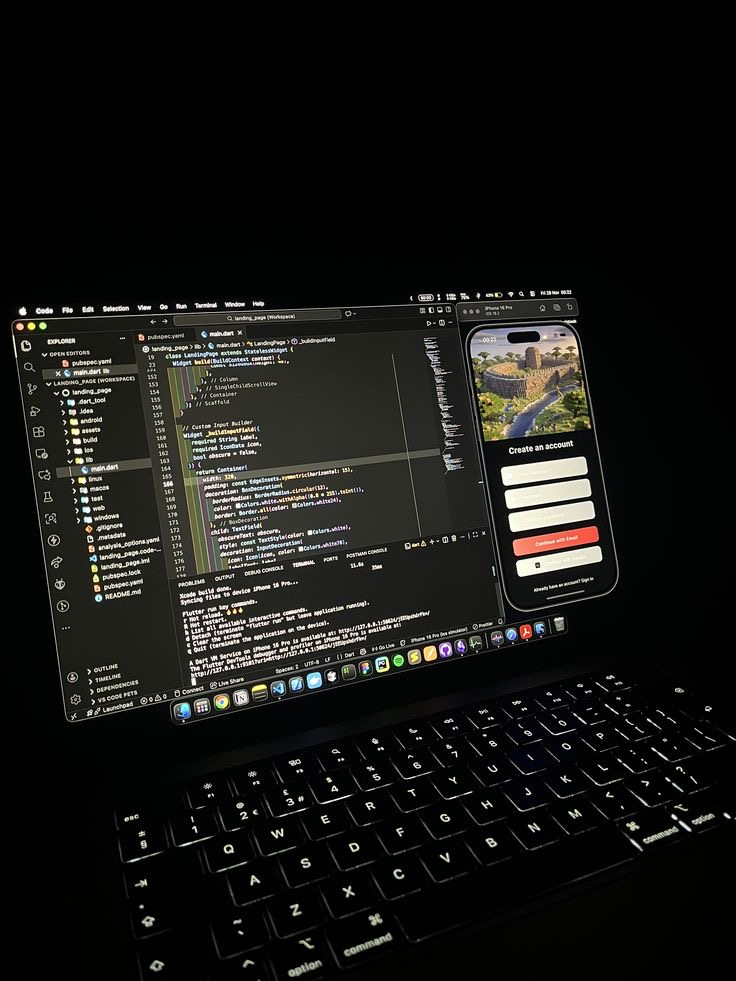
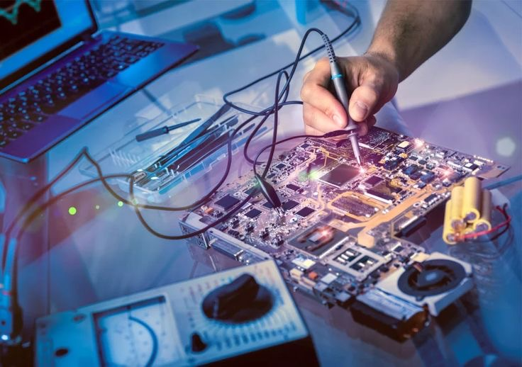
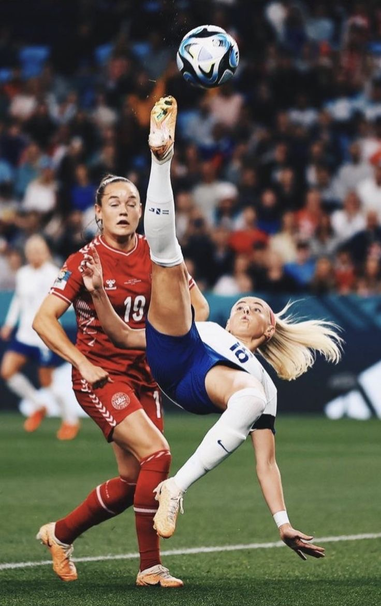
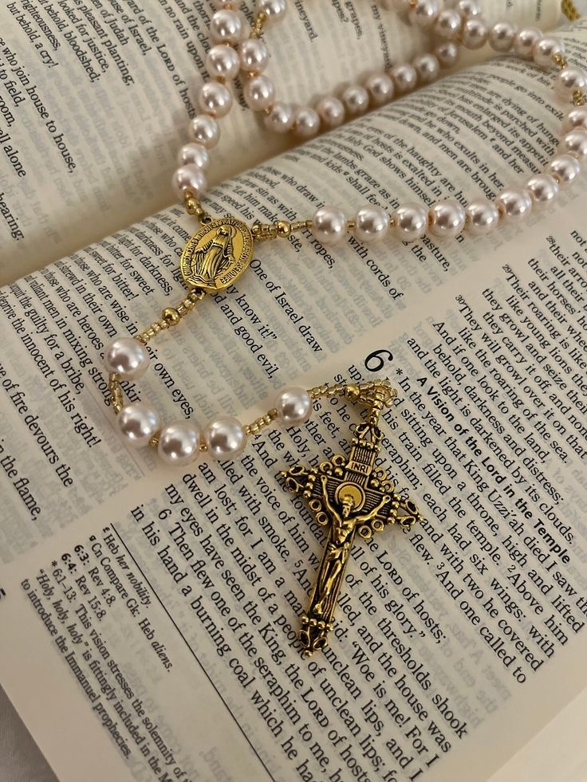

Tech
Programmation Mobile
J’aime concevoir des applications mobiles modernes, utiles et bien pensées, avec une attention particulière à l’interface et à l’expérience utilisateur.
Au-delà du code, mes passions reflètent ma manière de penser, de créer et d’évoluer au quotidien. Mes passions ne sont pas seulement des centres d’intérêt : elles influencent ma discipline, ma créativité et ma manière de voir le monde.

J’aime concevoir des applications mobiles modernes, utiles et bien pensées, avec une attention particulière à l’interface et à l’expérience utilisateur.

Diagnostiquer, réparer et optimiser les ordinateurs fait partie de ce que j’apprécie le plus.

Le football m’inspire par sa discipline, son intensité et l’esprit collectif qu’il développe.

Ma foi occupe une place importante dans ma vie. Elle nourrit mes valeurs, ma paix intérieure et ma manière d’avancer.